Land in London — straight to Windsor
Base: The Waldorf Hilton, London · Aldwych, Covent Garden · check in 3 PM · Hotel info →
- OvernightUnited · Houston (IAH) → London Heathrow (LHR)United, direct: Houston (IAH) 4:35 PM Fri 24 Jul → London Heathrow (LHR) 7:55 AM Sat 25 Jul (9 h 20 m). Booked — conf. on file. You’ll be jet-lagged, but Windsor’s a fairly gentle first outing — mostly walking and absorbing, no late night required.
- On arrivalDrop bags, freshen upHeathrow Express/Elizabeth line to Paddington (~20 min), then a quick bag-drop at the Waldorf Hilton — rooms rarely ready before 3 PM, but the hotel will hold luggage.
- ~11:30 AMBack to Paddington, then to Windsor & Eton Central via a change at Slough (~40–50 min total). Windsor Castle is open Saturdays, summer hours 10:00–17:15, last admission 16:00.Book Windsor Castle tickets ahead of time (timed entry). Prioritize St George’s Chapel today — it’s open Saturdays but closed to visitors on Sundays.
- Midday–AfternoonState Apartments, St George’s Chapel, and the grounds — budget 2.5–3 hrs. A working royal residence, so parts can close at short notice for state occasions.Learn more →
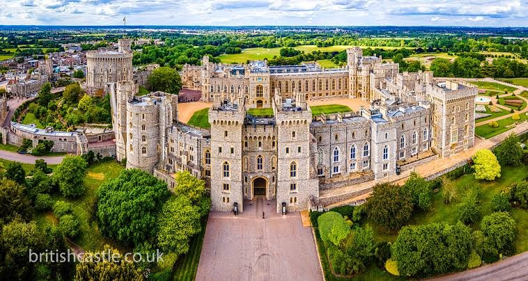
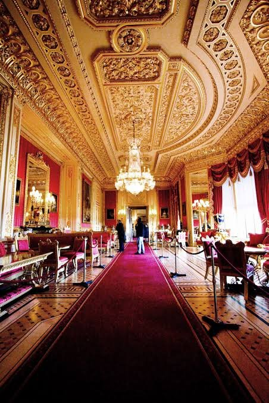
- EveningBack to London — early dinner, early nightTrain back into London by ~4–4:30 PM. Fight the urge to nap late in the day — eat early and sleep to reset onto UK time.
Dinner A classic first night: Dishoom (buzzy Bombay-style; Covent Garden or King’s Cross — go early, limited bookings), or a proper pub roast near your base.
Arundel Castle & the National Gallery
Base: London · a day trip south, back for the evening.
- ~8:15 AMTrain to ArundelVictoria (~20–25 min from the hotel) then a direct Southern train to Arundel, ~1 h 20–27 min, ~39 direct services a day. Aim to arrive for the 10 AM gardens opening.
- 10 AMSeat of the Duke of Norfolk. Gardens and the Norman keep open at 10; castle rooms from noon — do the grounds first, then the rooms 12–2 PM. Budget 3.5–4 hrs total. Closed Mondays outside August/bank holidays, which is why this is a Sunday.Learn more →
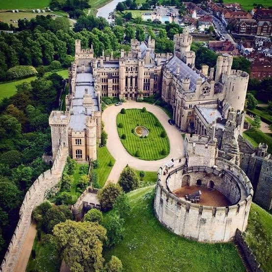
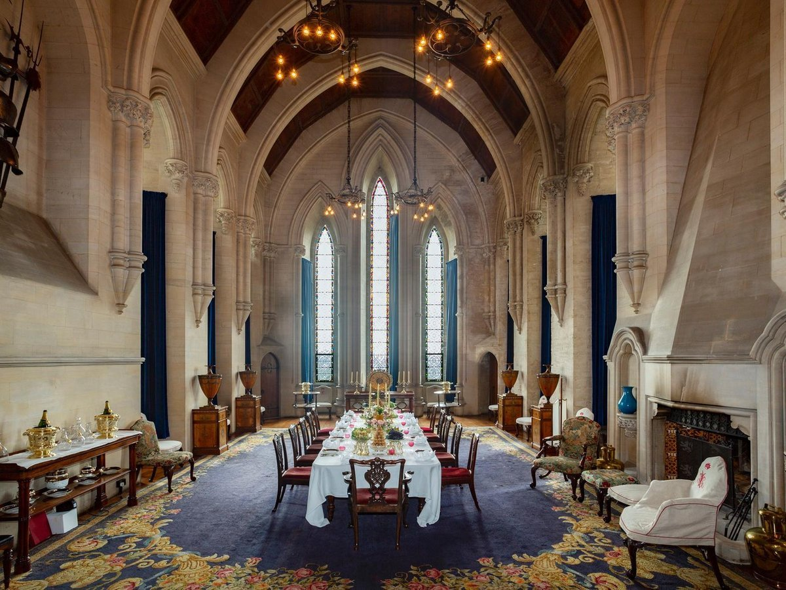
- ~2:15 PMReturn train to LondonBack at Victoria by ~3:30–3:45 PM. This means missing that day’s 10 AM Changing the Guard at Buckingham Palace — you’ll get a Guard ceremony on Monday instead.
- ~4 PMFree general admission, open Sun 10 AM–6 PM, last entry 5:45 PM. About 2 hours after Arundel is enough for a focused highlights visit — Van Gogh's Sunflowers, Turner, the Impressionists — not the full collection.Learn more →
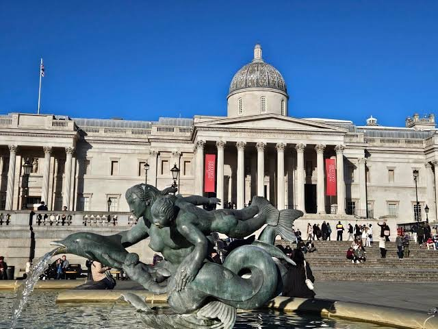
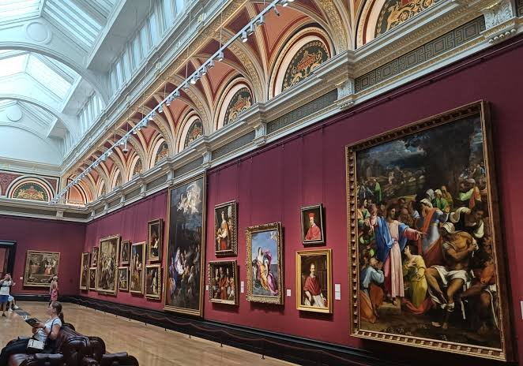
Dinner The Wolseley (grand European café near Piccadilly, close to Trafalgar Square — book), or a Soho institution. Reserve anything sit-down for Sunday evening.
Buckingham Palace, then north to Leeds
Base: London → Leeds · a tight but workable morning.
- 9:30 AMSelf-guided tour of the State Rooms, ~2 hrs — aim to finish by ~11:30 AM. Open daily 9:30 AM–7:30 PM through the summer opening (9 Jul–31 Aug).Book timed-entry tickets ahead. Bonus: today’s Changing the Guard runs at 11 AM — worth timing your exit to catch it.Learn more →
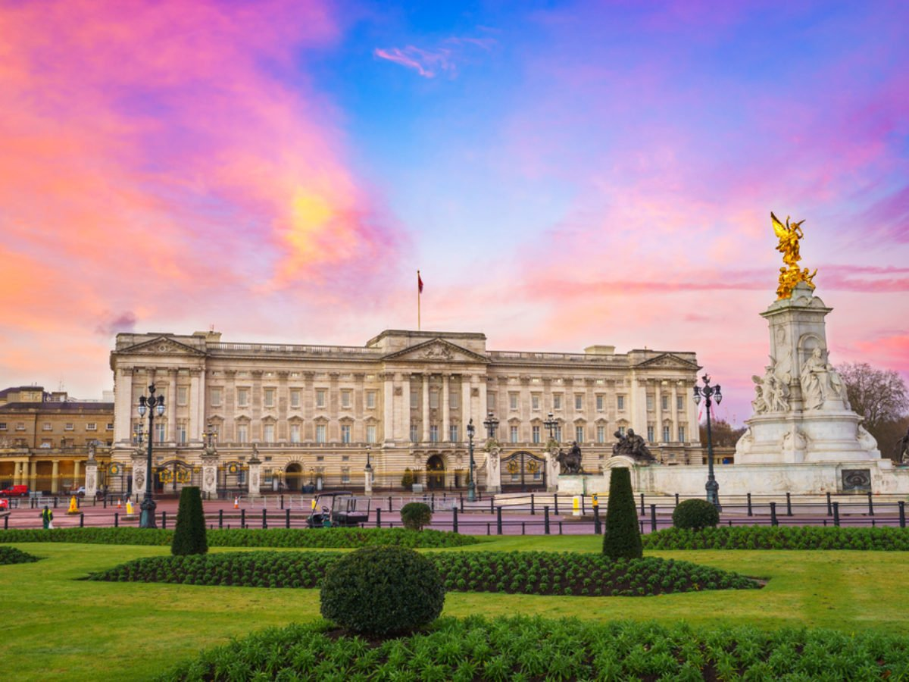
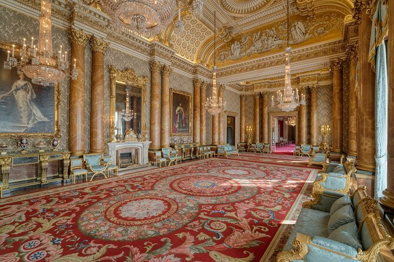
- ~11:45 AMBack to the hotel — bags & checkoutGrab luggage and check out (hotel checkout is noon), then head for King’s Cross — ~20–25 min from Aldwych.
- ~12:15 PMAim to be at the station by ~1:15–1:30 PM for buffer. If there’s time, Coal Drops Yard and the Platform 9¾ photo spot are right there — but making the train comes first.Coal Drops Yard →
- 2:30 PMDirect, about 2 h 15–2 h 30. Book advance fares early — far cheaper, with a reserved seat.
- EveningArrive Leeds — settle inCheck into the Leeds base (near Paul’s business or the station) and find dinner.
Dinner Bundobust (the Leeds original — Indian street food & craft beer), Tharavadu (superb Keralan), or Ox Club (live-fire).
Paul works · Wife’s day: York
Base: Leeds · Paul: business · Wife: independent (day return by rail)
- ~25 minYork ↗A quick hop from Leeds. York Minster, the medieval Shambles, and a walk of the city walls; then the JORVIK Viking Centre and the free National Railway Museum.
- TeaThe Yorkshire tea-room institution — expect a queue, and it’s worth it.
Day Lunch among York’s lanes; dinner back in Leeds when Paul is free.
Wife’s day: Harrogate
Base: Leeds · Paul: business · Wife: independent (~35–40 min by rail)
- Spa townGenteel and green: the original Bettys, the Montpellier Quarter boutiques, and RHS Garden Harlow Carr on the edge of town.
Day Lunch or afternoon tea in Harrogate; dinner in Leeds.
Wife’s day: Saltaire & Leeds
Base: Leeds · Paul: business · Wife: independent (~20 min by rail)
- MorningSaltaire ↗A compact UNESCO Victorian mill village. Salts Mill holds a large David Hockney gallery, a wonderful bookshop and cafés; add Roberts Park and the canal. An easy half-day.
- AfternoonLeeds cityPair it with central Leeds: the free Royal Armouries, Leeds Art Gallery, the Victoria Quarter arcades, and Kirkgate Market.
- FlexYorkshire Dales (any day)For big scenery, swap a town day for the Dales — Bolton Abbey, Malham Cove, Aysgarth Falls. Not a simple train hop: needs a car or a guided tour.
Dinner A last Leeds table — whichever of Bundobust, Tharavadu or Ox Club you didn’t try on arrival.
Leeds wraps up
Base: Leeds · last night before the drive north.
- DaytimeKeep it lightBusiness wraps today. A nearby half-day (Saltaire is ~20 min) or an unhurried pack — keep it early, tomorrow starts with a long drive.
Arrive & settle — Loch Ness south
Base: Glengarry Castle Hotel · check-in from 2 PM (later arrival expected — see below) · Hotel info →
A Victorian baronial mansion in 60 acres of woodland on the shore of Loch Oich, midway down the Great Glen. Its own restaurant serves Highland produce in a grand dining room, and the lawns run down to the ruined Invergarry Castle. The A82 out front puts Loch Ness, Fort William and Skye all within day-trip reach.


- 10:00 AMPick up hire car — Leeds AirportAvis, one-way to Aberdeen (conf. on file). Then the drive up to Glengarry — ~6–7 hrs via the A1(M)/M6/A9, so budget a lunch stop; a 2 PM check-in is unlikely, expect more like late afternoon.
- EveningA village at the south end of Loch Ness where the Caledonian Canal steps down to the loch through a flight of five staircase locks. Watch the boats work through, then stroll the towpath — an easy first outing after the drive.Learn more →


Dinner The Lock Inn, Fort Augustus — canalside pub with some of the Highlands' best fish & chips. Or dine in at Glengarry's own dining room.
Glencoe & Glenfinnan
Base: Glengarry Castle Hotel
- MorningGlencoe ↗A glacial valley flanked by the Three Sisters ridge and Buachaille Etive Mòr, cared for by the National Trust since 1935 and scene of the 1692 MacDonald massacre. A well-known film location — Skyfall, Harry Potter, Braveheart — with free roadside viewpoints and short trails.Learn more →
- AfternoonA 21-arch concrete railway viaduct completed in 1901, world-famous from the Harry Potter films. In season the Jacobite steam train crosses late morning (departs Fort William ~10:15) — time your spot for it. The car park fills by 9:30 in peak weeks.Jacobite train →


Lunch Moss (Glencoe) — tiny family-run room, seasonal Scottish cooking; book ahead.
Dinner Crannog at Garrison West (Fort William) — lochside seafood: oysters, mussels, scallops.
Loch Ness north & Culloden
Base: Glengarry Castle Hotel
- MorningA sprawling medieval ruin on the shore of Loch Ness near Drumnadrochit, run by Historic Environment Scotland, with a visitor centre and one of the best loch viewpoints anywhere. Pre-book — parking is limited and it gets busy; boat cruises leave from nearby.Learn more →
- AfternoonThe windswept moor where the 1746 battle ended the Jacobite rising in under an hour. The National Trust visitor centre lays out both sides of the story, and clan grave-markers stand out on the field itself. Allow ~2 hrs. About 35 min past Urquhart along the loch and through Inverness.Learn more →


Lunch Ness Deli (Drumnadrochit) — famed quiches, pies and bakes, minutes from Urquhart.
Dinner Back at Glengarry's dining room, or The Lock Inn in Fort Augustus.
Fort William & Ben Nevis
Base: Glengarry Castle Hotel
- MorningBritain's highest mountain at 1,345 m. The Mountain (Pony) Track from Glen Nevis is the standard route — strenuous, 7–9 hrs return, real hillwalking. For a lighter day, take the lower Glen Nevis trails or the Nevis Range gondola, then Fort William town for lunch.Route guide →


Lunch The Highland Coo..k (Fort William) — hearty Scottish plates, standout haggis.
Dinner The Geographer (Fort William) — buzzy bistro, local beers and fresh seafood.
Isle of Skye Highland Games
Base: Glengarry Castle Hotel · leave ~6:45–7 AM
- By 9:30 AMOne of Scotland's oldest gatherings, held on The Lump above Portree harbour since 1877 — caber toss, tug-of-war, solo piping, Highland dancing, plus a hill race and yacht race. A procession leaves Somerled Square at 9:45; local events start 10:00, open events 11:45, running to ~5 PM. Tickets booked — 2 adults. Arrive early; parking and seating fill fast, and bring wet-weather gear. Keep it games-only; home by ~8 PM.Games & tickets →


 The heavy events on The Lump — the weight throw, the caber, and weight-over-the-bar, feet from the crowd.
The heavy events on The Lump — the weight throw, the caber, and weight-over-the-bar, feet from the crowd.

 Solo piping and Highland dancing run alongside the field events all afternoon.Isle of Skye scenery — the Storr, a short drive from Portree.
Solo piping and Highland dancing run alongside the field events all afternoon.Isle of Skye scenery — the Storr, a short drive from Portree.


Lunch Sea Breezes (Portree) — fresh-off-the-boat seafood at the pier; expect a queue, doubly so on games day.
Dinner Scorrybreac (Portree) — intimate near-Michelin tasting menu if you linger; otherwise a light supper back at Glengarry after the drive.
Move east — Glenfarclas
Check out Glengarry (11 AM) → check in Craigellachie Hotel (3 PM) · Hotel info →
A restored 1893 hotel above the meeting of the Fiddich and Spey, in the heart of malt-whisky country. It's home to the Quaich Bar — 700-plus single malts — plus the 300-year-old Spey Inn pub and the GEAMAIR restaurant, with the Macallan and a dozen distilleries a short drive away. The Speyside Way footpath and the landmark Craigellachie Bridge are on the doorstep.


- 1:30 PMThe most exclusive experience on Speyside: an in-depth distillery tour followed by a tasting of five whiskies from the Family Cask Collection, one from each decade, 1960s through 2000s. £150pp, ~2.5–3 hrs, starts 1:30pm sharp — this tour runs Thursdays only (Apr–Oct), which is why it's today rather than Friday. Book well ahead. Drive straight from Glengarry (no stops) to make the start time comfortably.Tour details & booking →
Lunch Grab something en route before 1:30 (or at the distillery café), then The Gather'n Café (Aberlour) on the way to the hotel if you want a second stop.
Dinner In-house at the Craigellachie — GEAMAIR's tasting menu, or the 300-year-old Spey Inn pub.
Fly Fishing & Speyside Villages
Base: Craigellachie Hotel
- MorningFly fishing on the SpeyGuided fly fishing for one, arranged through the hotel's own ghillie network — enquiry sent requesting a half-day slot so the afternoon stays free; beat, cost and exact finish time still to be confirmed. Ask about a packed riverside lunch.Fly fishing at the hotel →
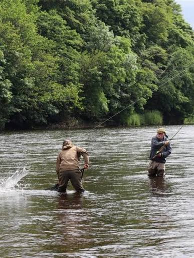
- Early afternoonOne of the last working cooperages in Scotland — watch coopers hand-build and repair oak casks by fire and eye alone, no power tools. A loud, physical, genuinely impressive ~45-minute tour.Fridays the Cooperage is open 9 AM–3 PM only, tours on the hour, booking essential — confirm the fishing's finish time before locking in a slot, since the last tour is around 2 PM.Tours & booking →
- Mid-afternoonThe village bakery Joseph Walker opened in 1898, still selling the full range at shop prices with free samples on the counter — a nice bit of local history a few minutes from the Cooperage.Learn more →
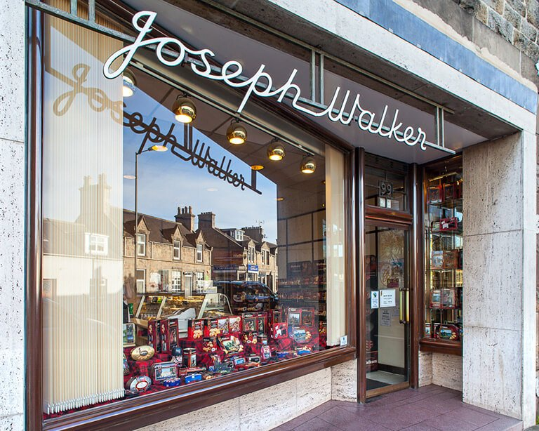
- Late afternoonSpeyside Way — Aberlour to CraigellachieAn easy, flat riverside stretch of the long-distance path linking the two villages along the Spey, finishing over the old Telford bridge at Craigellachie. Walk the whole ~4 miles or just wander a stretch and turn back — no booking, go at your own pace.
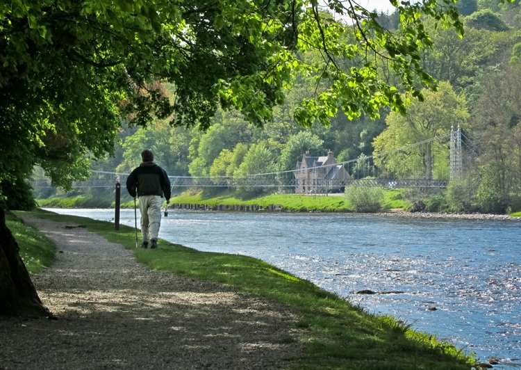
- EveningVillage & dinnerWind down browsing Aberlour's whisky shops and the riverside, then dinner in the village.
Lunch Ask the hotel about a packed riverside lunch for the fishing, or grab something in Aberlour on the way to the Cooperage.
Dinner The Mash Tun (Aberlour) — whisky-hotel bistro right on the Spey, a fitting close to a village afternoon — or the hotel's own Quaich Bar for 700+ malts.
Flex day — Cairngorms
Base: Craigellachie Hotel · to confirm
- Option AMain gateway to the UK's largest national park, ~50 min south. The Cairngorm funicular, Rothiemurchus pine forest, sandy-beached Loch Morlich and the free-ranging reindeer herd are all here — a green counterpoint to the whisky days.Plan a day →Loch Morlich & the Cairngorms, near Aviemore.
- Option BMore SpeysideA second distillery day — Glenfiddich, Balvenie, Aberlour. (The Cooperage is already covered on Fri 7 Aug now.) Zero repositioning from the hotel.


 Option B: Glenfiddich’s still house and famous stag.
Option B: Glenfiddich’s still house and famous stag.


Lunch Delaney's (Aviemore) — inventive small plates; one of the best tables in the Highlands.
Dinner The Old Bridge Inn (Aviemore) — riverside pub with local ales and live music.
Balmoral, then fly out
Check out Craigellachie (11 AM) → Aberdeen Airport
- 10:00 AMThe royal family's Highland home on Royal Deeside, bought by Victoria and Albert in 1852, ~1.25 hr south through the Cairngorms. General Admission is booked — grounds, gardens and the ballroom exhibition. Today is the final day of the 2026 visitor season.Learn more →

 The castle gates and its walled terraced gardens — grounds open to General Admission on the season's final day.
The castle gates and its walled terraced gardens — grounds open to General Admission on the season's final day. - 1:30 PMAfternoon Tea at BalmoralBooked, 2 guests — a set menu of estate and local produce (venison sausage roll, smoked trout, scones with clotted cream) served on bone china in the castle's dining area. Runs about two hours; ends ~3:30 PM.See the afternoon tea →
 The set tea served on the estate's own tartan bone china — scones with clotted cream, finger sandwiches, and cakes on the tiered stand.
The set tea served on the estate's own tartan bone china — scones with clotted cream, finger sandwiches, and cakes on the tiered stand. - EveningScotland's northeast hub at Dyce, ~1.5 hr east of Balmoral. After the tea, drive to Aberdeen and overnight at the Hilton Aberdeen TECA (Stoneywood, ~5 min from the airport) — on file — then fly home Mon 10 Aug — an Aberdeen → Heathrow morning feeder connects to the booked 1:40 PM United long-haul (see the next day).Airport info →

Midday Afternoon Tea at Balmoral (booked, 1:30) — a substantial set menu; you won't need a separate lunch.
Dinner If flying late or overnighting near Aberdeen: Fish Shop (Ballater), near-Michelin seafood, or the Clachan Grill.
Fly home — Aberdeen · London · Houston
From Aberdeen (overnight at the Hilton Aberdeen TECA) → Heathrow → Houston
- MorningAberdeen (ABZ) → London Heathrow (LHR)Take the second departure of the morning — roughly 08:00–09:00, landing Heathrow Terminal 5 about 09:45–10:45 (British Airways, ~1 h 45). United departs from Terminal 2, so budget time for the free inter-terminal transfer (~15–20 min) plus a bag re-check and security again — still a comfortable cushion before the 1:40 PM long-haul.To book. United can’t sell this leg — Aberdeen–Heathrow is British Airways only (a different alliance), so it’s a separate ticket. Allow a generous self-connection buffer (aim to land by ~10:45), and travel hand-luggage only if you can to skip a bag re-check.
- 1:40 PMLondon Heathrow (LHR) → Houston (IAH)United, direct — LHR 1:40 PM → IAH 6:00 PM (10 h 20 m), Terminal 2 (The Queen’s Terminal). Booked — conf. on file. Once through security, The Perfectionists’ Café (Heston Blumenthal) is right there for a proper last meal — the fish and chips is the one to get. Home by evening, Houston time.
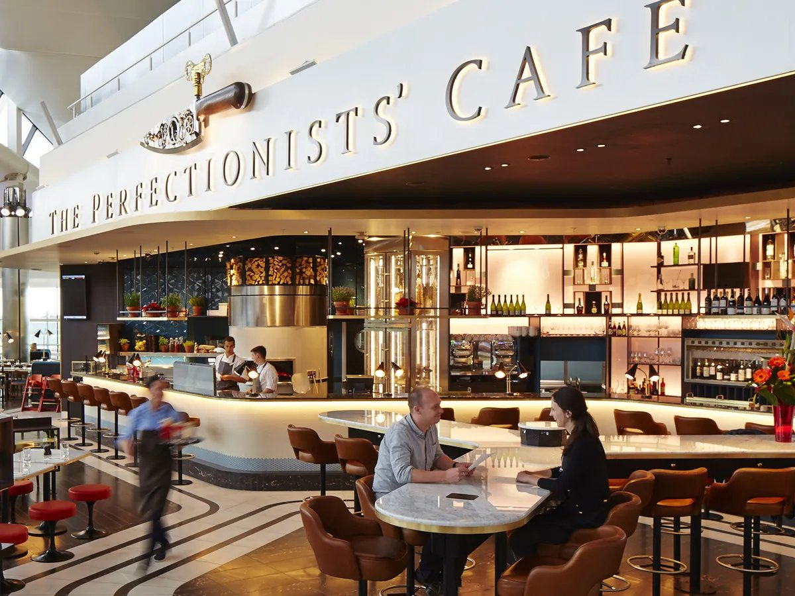
Glengarry Castle Hotel
DatesSat 1 → Thu 6 Aug (5 nts)
Expedia itineraryon file
RoomSuperior Double · 2 adults
Craigellachie Hotel
DatesThu 6 → Sun 9 Aug (3 nts)
Expedia itineraryon file
RoomSnug Double · free cancel to 4 Aug
Balmoral Castle
DateSun 9 Aug · GA 10:00 + Afternoon Tea 13:30
Order referenceon file
Party2 adults · £187 paid
The Waldorf Hilton, London
DatesSat 25 → Mon 27 Jul (2 nts)
Expedia itineraryon file
RoomDeluxe · 1 Queen · pay at property
Hilton Aberdeen TECA
DatesSun 9 → Mon 10 Aug (1 nt)
Confirmationon file
RoomKing Guest Room + breakfast
Hire Car (Avis)
Pick upLeeds Airport · Sat 1 Aug, 10:00 AM
Drop offAberdeen Airport (ABZ) · Mon 10 Aug, 10:00 AM
Confirmationon file
Est. total$501.86 (Pay Later — charged at pickup)
Flights (United)
OutIAH 4:35 PM Fri 24 Jul → LHR 7:55 AM Sat 25
HomeLHR 1:40 PM Mon 10 Aug → IAH 6:00 PM
Conf.on file
FeederABZ → LHR AM 10 Aug — book separately (BA)
- Book Glenfarclas's Five Decades Tour now — £150pp, Thursdays only (1:30pm, Apr–Oct), so 6 Aug qualifies; book via glenfarclas.com. It's the reason Culloden moved to 3 Aug — there isn't time for both on the 6th.
- Balmoral is the hard stop — 9 Aug is the final day of its 2026 visitor season; nothing after.
- Car drop at Aberdeen — a one-way return (pick up near the Great Glen, drop ABZ) likely carries a one-way fee; worth pricing against a round-trip.
- Confirm the Aug 8 flex day — Cairngorms scenery or a second Speyside distillery run.
- Fishing enquiry sent — Fri 7 Aug morning, one rod, via the Craigellachie Hotel's ghillie network; awaiting their reply on beat/cost/timing before the Speyside Cooperage slot can be locked in.